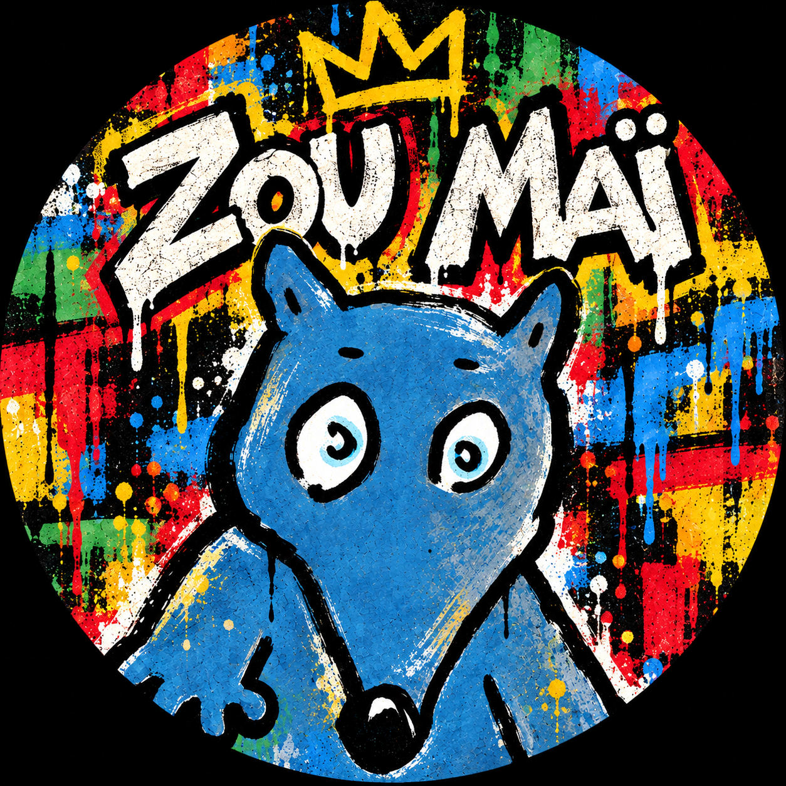

THE MÉTHODE 3 · CYCLE 3
Choisis une leçon : jeux, BD à lire ou BD sonorisée lorsque ses dialogues ont été préparés. Les 22 BD restent accessibles.
Sensei Zou Maï · Les liens Jeux des trois premières leçons ouvrent encore l’ancien dépôt the-method ; les BD s’ouvrent ici, sans changer de dépôt.
La lecture suit les répliques dans l’ordre défini pour chaque planche. Le halo indique la réplique en cours ; les voix disponibles dépendent de l’appareil.